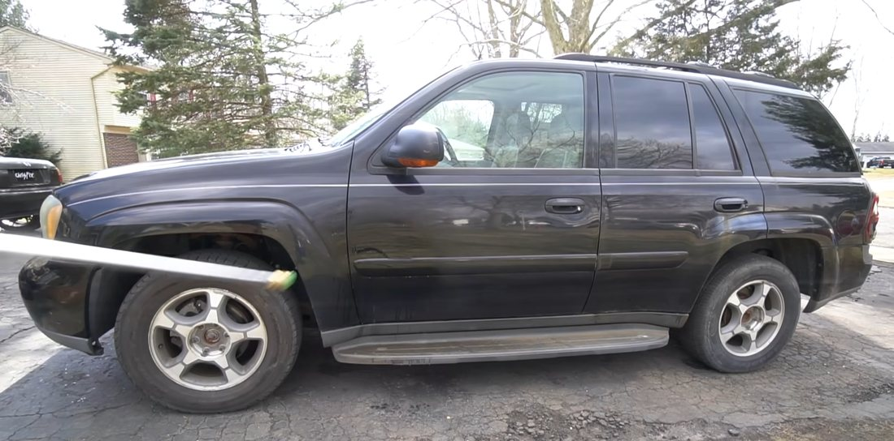
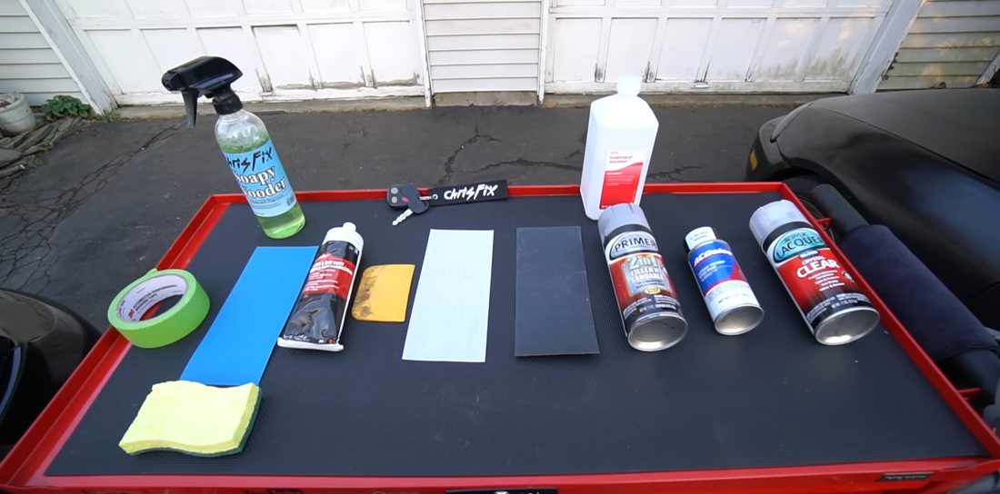
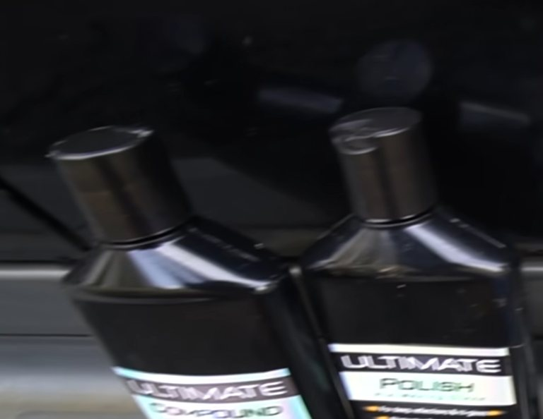
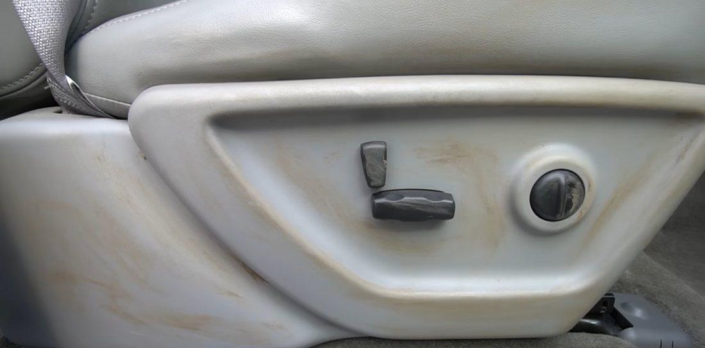
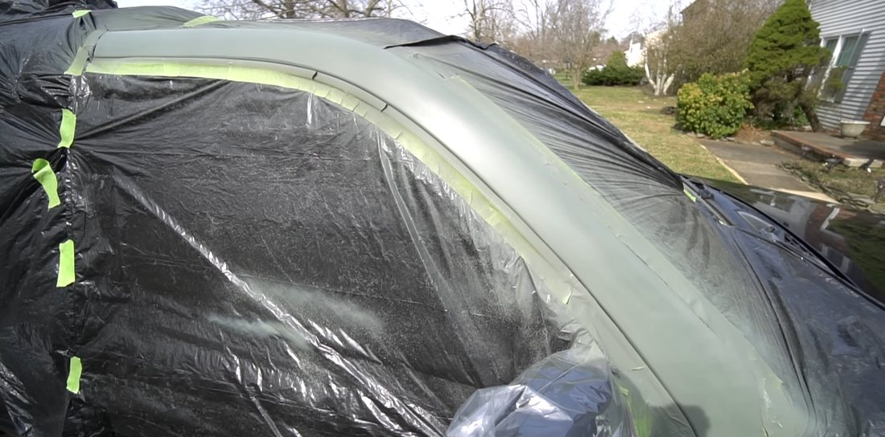
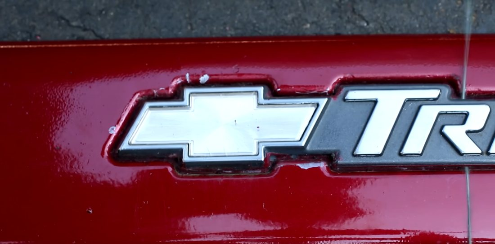
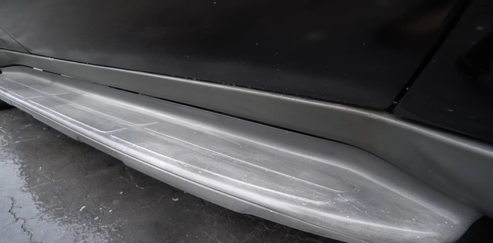
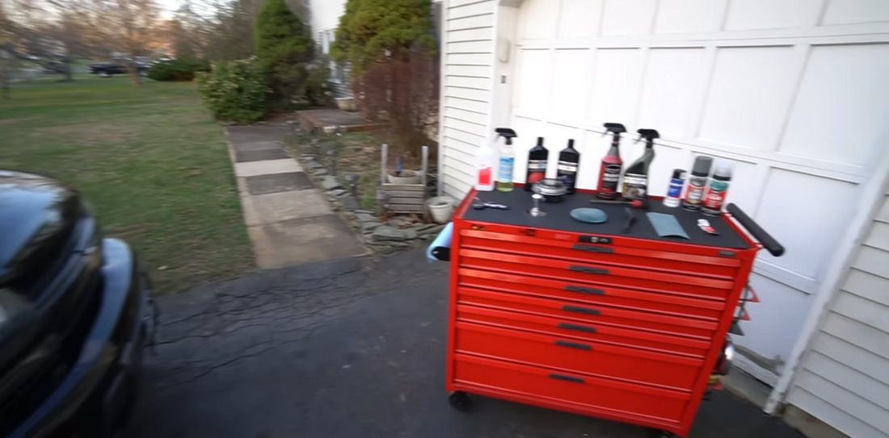
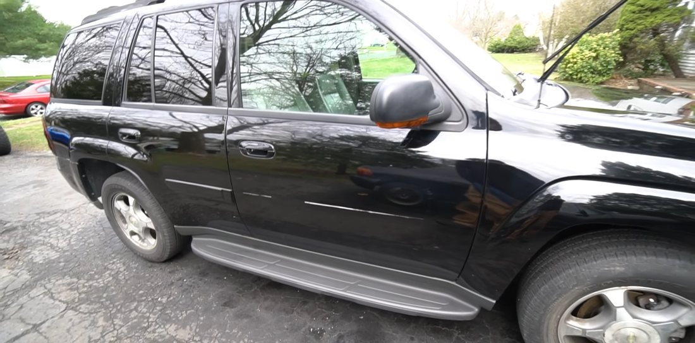

一支 29 分钟的修车视频，把一辆 500 美元旧 SUV 的漆面从发白、剥落做到重新上漆。下面按字幕拆成“能照着做”的顺序：先洗车分区，再研磨—抛光—打蜡；剥落处要打磨、遮蔽、喷漆，最后等 24 小时再水磨衔接。视频没给产品单价，也没给总工时。

适合谁：愿意手工操作、能接受等待干燥的人。视频在讲完水磨衔接后特意说，全程都是手工，无需特殊工具00:18:5000:18:57。
不适合谁：把清漆层损坏当成“抛光就能去掉”的人。字幕明确说那种情况得打磨并重新喷漆00:24:1400:24:23。
视频里没说：研磨剂、抛光剂、蜡和清漆的品牌型号与单价；整车修复总工时；喷漆环境要求。
做任何漆面修复之前，第一步是清洁车辆：用水冲掉污垢，再涂洗车液；没有泡沫喷枪，可以用一桶肥皂水代替00:06:4800:06:56">00:06:56。
洗完再贴胶带。视频在车侧贴了一条胶带，用来把修复前后分开看00:07:1500:07:18。你要复刻这个方法，就把胶带贴在干净、干燥的漆面上。

| 你看到的问题 | 视频里的处理 | 照着做 |
|---|---|---|
| 漆面发白、氧化 | 研磨剂去氧化层，抛光剂细化，最后上保护蜡00:07:2700:07:44 | 先只做这三步，别急着喷漆 |
| 漆面剥落、露底漆 | 先酒精清洁，打磨到平滑，再遮蔽喷漆00:10:1400:11:53 | 按第 4、5 节做 |
| 新喷的漆面 | 只研磨和抛光；先不打蜡、不密封、不上陶瓷涂层，等约 30 天00:20:1200:20:25 | 把新漆和老漆分开处理 |
| 塑料件、大灯 | 可用陶瓷涂层；大灯先用 5000 目砂纸和肥皂水去氧化，再抛光00:22:3800:25:2500:25:32 | 大灯别当成车漆直接研磨 |
顺序没有悬念：研磨剂最强，用来去掉最顽固的氧化清漆层；接着用颗粒更细、腐蚀性更弱的抛光剂；最后在抛光面上做保护00:07:2900:07:3500:07:44。

工具要选对：用超细纤维涂抹垫，不要用超细纤维毛巾。视频说毛巾会吸走太多研磨剂、降低研磨效果00:07:5000:07:57。
手法是画圈涂抹，再用中等力度压到漆面上；擦干净后看氧化层变化00:08:0000:08:04">00:08:0400:08:09。抛光剂用同样方法，把垫翻过来涂，中等力度即可00:08:1400:08:31。
最后一层是密封剂或蜡：涂上后静置两分钟让它略微变薄，再擦掉00:08:4300:08:48。撕掉胶带前后对比，字幕的评价是“前后差别真大”00:08:50。
补漆前先用酒精清洁剥落的漆面，让油漆能更好地附着00:10:1400:10:15。门板上的旧漆在这一步被识别为“剥落得不成样子，露出了底漆”00:11:20。

第一道用 180 号砂纸，但要包在一块厨房海绵上。诀窍是海绵要有弹性，能分散压力，避免局部过热；别在一个地方用力过猛00:14:1700:14:26">00:14:2600:14:33。
接着用酒精擦一遍，换 320 号砂纸去掉 180 号留下的划痕，再擦一遍酒精00:14:4800:14:5300:14:55。最后用 400 目砂纸，这是喷漆前最细的一道；留下的细划痕反而有助于油漆附着00:14:5900:15:04。
收尾再用酒精把所有要喷的板面擦一遍00:15:0900:15:12。
遮蔽别只用直胶带：那样会留下一条生硬的边界。视频的做法是用胶带遮住不喷的地方，再用剪开的垃圾袋盖住车身，最后把一张纸对折贴成圆弧，让油漆顺纸流下、形成平滑过渡00:13:0000:13:1000:13:3100:13:44。

喷涂顺序是底漆 → 面漆 → 清漆。底漆要完全覆盖但别喷太厚，干燥几分钟后再喷面漆；面漆采用重叠喷法，每层之间晾几分钟，总共喷三层00:15:1300:15:2800:15:45。
清漆要和色漆是同一种类型的油漆。薄喷几层、略微重叠、每层晾几分钟；最后一层可放慢并稍厚一点，但要防止流淌00:15:5000:15:56">00:15:5600:16:07。

门饰条不要直接喷：可以用胶带遮住，或者拆下来。视频用 50 磅拉力的编织鱼线拆饰条00:16:2200:16:2600:16:27。拆下的饰条用 400 号砂纸打磨、酒精清洁，再喷底漆三层和汽车清漆00:16:4700:16:5900:17:04。
喷完后让油漆晾干 24 小时00:17:13。撕胶带时要以锐角从喷漆区域向外撕，才能形成清晰的边界00:17:2200:17:25。
接下来是很多人想不到的动作：用 5000 目砂纸打磨刚喷好的表面，去掉橘皮纹和薄雾00:17:4600:17:58。把肥皂水喷在砂纸和漆面上，砂纸平贴表面，用中等力度打磨；也可以从 1000 目逐步过渡到 5000 目00:18:0200:18:1200:18:13。

新旧漆交界处要重点磨平，让新漆与旧漆重叠衔接，然后再研磨、抛光00:18:2300:18:2600:18:50。

但新喷的漆别封蜡：视频说它还在固化、还在“呼吸”，只研磨和抛光即可，涂蜡或类似产品最好等大约 30 天00:20:1700:20:23">00:20:2300:20:28。

| 坑 | 怎么避 |
|---|---|
| 用超细纤维毛巾涂研磨剂 | 毛巾会吸收太多研磨剂，改用涂抹垫00:07:5300:07:57 |
| 用胶带拉出笔直边界 | 视频说会形成生硬胶带线，改用对折纸张贴出圆弧过渡00:13:2200:13:31 |
| 砂纸直接压在漆面上 | 180 号要包有弹性的厨房海绵，分散压力、避免局部过热00:14:1900:14:26 |
| 清漆喷太厚 | 薄喷多层、略微重叠；最后一层稍厚也要防流淌00:15:5600:16:07 |
| 撕胶带方向不对 | 从喷漆区域向外以锐角撕，别直扯00:17:2200:17:25 |
| 新漆立刻打蜡或上陶瓷涂层 | 只研磨抛光，等约 30 天00:20:25 |
| 以为抛光能救所有污渍 | 清漆层损坏无法靠抛光去除，需打磨并重新喷漆00:24:1400:24:23">00:24:23 |
| 说法 | 视频里怎么说 | 本文处理 |
|---|---|---|
| “抛光效果是永久性的，不会被肥皂或水洗掉” | 讲完三步流程后这样说00:08:3500:08:39 | 这是视频原话；同一支片后面又讲陶瓷涂层、约 30 天等待和“至少保持一年”的保养思路00:21:0700:26:10，两者语境不同，本文不下“永久”的结论 |
| “500 美元买车、400 美元买零件” | 开场交待这台车的成本00:00:2000:00:24 | 这是这一台车的个案数字，不是你的预算参考 |
| “挑车把最低价设到 250 美元、最高 1200 美元” | 视频讲找车时给出的筛选办法00:02:5300:03:06 | 按视频原话记录，不代表所有地区、平台都适用 |